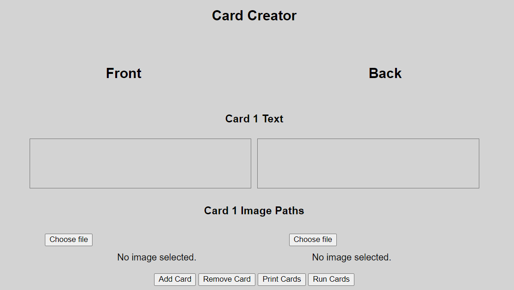
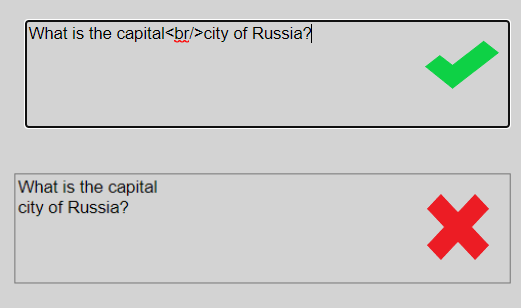

How To Use This Program
The Card Creator
Once you start up the program, you will see, in the third part of the grey body/section, an area with the title "Card Creator". We will get to the above section, titled "Settings", later.

You'll see two text boxes (under the subtitle "Card 1 Text"). You can enter the text you want for each side of the flashcards in these boxes. The text for the front goes in the left text box and the text for the back goes in the right text box. Beneath these are two buttons, each labelled "Choose File". You can click these to select an image for your cards. Again, the left one should be used for the front side of the card and the right one should be used for the back side of the card. Once you have clicked one of these buttons, you can select your image file, or you can click cancel to remove the image completely.

Below the image-select buttons, you'll see four buttons, labelled "Add Card", "Remove Card", "Print Cards" and "Run Cards". "Add Card" adds a card onto the set and "Remove Card" removes the last one. "Print Cards" will generate a popup window, allowing you to print the cards (more on this later). "Run Cards" can be used to test a set out, or if you do not have access to a working printer. This allows you to access your cards from your device (again, more on this later).

Saving and Loading
Saving and Loading is very simple, as of version 1.6.0. Simply click on the "Save to .cardset File" button in the "Saving" section (below the "Card Creator" section). You will recieve a prompt. Simply enter a title for your save and click "Ok", or, alternatively, click "Cancel" to cancel the saving procedure.
To load a save, click on the "Choose file" button in the "Loading" section (below the "Saving" section). This will allow you to choose a .cardset file from your computer that you can load. If you want to load from an old save (pre version 1.6.0) then you can click the "Load From Browser Local Storage" button in the section below to choose an old save.

It is highly recommended that you keep regular backups of your cards, especially if you consider them important!
The Settings
The first section, at the top of the page, is title "Settings". This section has three buttons which allow you to change how your cards print. The first button says "Close Card Popup After Printing" and is on by default. When on, the print window (more on this later) will automatically close after use. If you turn this off, the popup window will stay open after you click either "Print" or "Cancel" in the print menu. This means that you can copy and edit the HTML and CSS of the created popup page with all your cards on. You can use this for an HTML backup if you copy the outer HTML of the HTML tag from the console/inspect element menu, paste it into a text editor and save it. Please note that you would require the "main.css" and "pageCSS1.css" files (which are included with the program) to be copied and pasted into the same directory as the saved cards. The next button is the "Display Flashcard Borders" button, which is also on by default. This setting simply decides whether the cards should print with borders around each of them. The third button allows you to decide whether page information should be printed (e.g. title and page number). This will consequently surround the page with a margin, making the cards smaller. If you are having problems printing (e.g. the text is being cut off and/or the boxes are too big for the page) then it is worth turning this setting on, as it might fix your issue. It is off by default. You will also see two sliders beneath the buttons. The top slider controls the amount of padding that the cards will have along their width when printing. Padding is whitespace that surrounds the contents of the card. You can set this in pixels. Please note that a padding value that is too low will not work with some printers, as the text may go off the page, or the card might be too big. It is worth experimenting a bit to find a padding value that is right for your printer. The default is 35px which works well for most devices. The second slider controls the font size of the text. This only changes the font size for the text on the printed page and the text shown when the cards are ran in the browser.

Printing and Running
At the bottom of the "Card Creator" section, you will find the "Print Cards" and "Run Cards" buttons. "Print Cards" allows you to print your set of cards. It will create a popup page and organise your cards, before asking you to select your printer, number of pages, etc. You can cancel at this point. It is worth playing around with the settings, explained in the paragraph above, before printing. It is highly recommended that you print a test set of about 4 or 5 cards, to check that the cards print well. If they don't, you can play around with the settings to see if it makes them print better. If you do not have access to a working printer, you can use the run flashcards option. This allows you to revise from your flashcards in the browser, allowing you to move between the cards and flip them.

Miscellaneous Help
If you would like the text to drop down a line on your card, do not just press enter and drop down a line in the box, instead, write a HTML line break tag (<br/>). In some cases, you might need to add a space after the <br/>, or the text may start to glitch out (this is rare, however). See below for an example on how to implement a line break:

If you would like to put a word in bold, you write HTML bold tags around your word (e.g. to put the word "test" in bold, you would write: <b>test</b>).